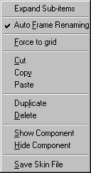
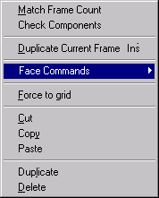
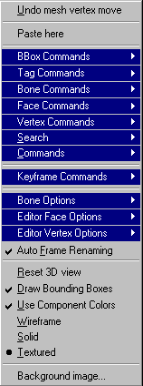
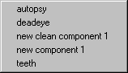
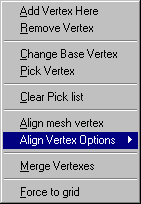
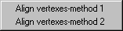
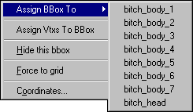
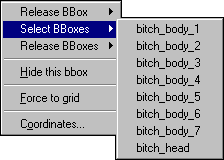

Right Mouse Button (RMB) Menus
Updated 30 May 2011
- QuArK Information Base
- 1. Introduction to QuArK
- 1.6. Model-editor in QuArK
|
|
Right Mouse Button (RMB) Menus
Updated 30 May 2011
|
Upper levels: - QuArK Information Base - 1. Introduction to QuArK - 1.6. Model-editor in QuArK |
|
1.6.5. Right Mouse Button (RMB) Menus |
[ - - ] |
This is a special section that only covers the Model Editor's RMB menus. New commands are constantly being added to the all menus. If there is no F1 help for some command, or you can not understand what it says, post to the QuArK messageboard for help (and a heads-up to the docco writers). Most of the commands on the menus also have hot keys (accelerators), which you can customize from Configuration at the bottom of the 'Options menu'. |
|
Index |
|
Tree-view RMB menus |
cdunde - 30 May 2011 | [ Top ] |
|
There are a number of RMB menus that apply specifically to the Tree-view and are pretty well self explanatory so we will only cover a couple of them that need it.  Expand Sub-items : This will expand all of this items sub-folders and their sub-folders on down. Auto Frame Renaming :Some models consist of more then one component. If so, their frame names should always match. When checked, if a frame of one component is renamed, this will cause the same frame of all the other related components to be renamed also automatically. Force to grid : This will cause any vertex to snap to the nearest location on the editor's grid. Cut : Cut the selection to the clipboard. Copy : Copy the selection to the clipboard. Paste : Paste a model object from the clipboard. Duplicate : This makes a copy of the selected object(s), but not all of them. Primarily components and frames, it gives each new item its own name by adding the next numerical sequence of its group. With frames it drops it at the end of its group. This avoids errors with other functions. Also handles skins, but no renaming, and multiple items, even in different groups and components. Delete : Delete the selection. Show Component : This works in conjunction with the Hide Component function below. It will redisplay the selected model component in the editor's view and cause it to become active again. Hide Component : This works in conjunction with the Show Component function above. When the selected model component is in this state it will not be drawn in the editor's view and becomes inactive for various functions. Save Skin File : Opens a file save window and allows you to save the selected skin as various
types of image files.  Match Frame Count : This will duplicate the number of frames in the selected components with the one that has the most frames in it. It will not copy the frames, only how many there are. Check Components : This checks components for any errors in them that might exist. At this time just for Match Frame Count but more will be added in the future. However it does give more info about them. Duplicate Current Frame : This copies a single frame that is currently selected and adds that copy to that model component's animation frames list just below the frame being copied. This can be used multiple times for the same single original frame. For multiple frame copies use the Duplicate function on the Edit menu. Face Commands : Performs the same as the Editor Views RMB menus item. Please click the menu link for a detail description and its use. Force to grid : Performs the same as the above RMB menu item. Cut : Performs the same as the above RMB menu item. Copy : Performs the same as the above RMB menu item. Paste : Performs the same as the above RMB menu item. Delete : Performs the same as the above RMB menu item. |
|
Editor Views RMB menus |
cdunde - 30 May 2011 | [ Top ] |
|
Undo : This will display the last Undo\Redo action item that has taken place if any.  Paste here : This is a simple paste command to drop something you have copied into one of the editors views if it can be. BBox Commands : This is the link to the BBox Commands sub-menu that will appear when your courser is over it and are covered in detail below. Tag Commands : This is the link to the Tag Commands sub-menu that will appear when your courser is over it and are covered in detail below. Bone Commands : This is the link to the Bone Commands sub-menu that will appear when your courser is over it. To activate this menu item you must have the Linear Drag Handles button de-activated (in vertex mode) and select either the Skeleton folder or a model component's Frames folder or at least one frame or bone within one of those folders, then this menu item will activate. Individual items will become active on its sub-menu depending on your selections and cursor placement over a bone handle. These are strictly bone related and are covered in detail below. Face Commands : This is the link to the Face Commands sub-menu that will appear when your courser is over it. To implement this menu you must have the Linear Drag Handles button activated (in face mode) and select at least one face in a model component, then this menu item will appear. These are strictly face (triangle) related and are covered in detail below. Vertex Commands : This is the link to the Vertex Commands sub-menu that will appear when your courser is over it. To activate this menu item you must have the Linear Drag Handles button de-activated (in vertex mode) and select at least one frame in a model component's Frames folder, then this menu item will activate. These are strictly vertex related and are covered in detail below. Search : This is the link to the Search sub-menu that will appear when your courser is over it and are covered in detail below. Commands : This is the link to the Commands sub-menu that will appear when your courser is over it. These are the same commands located on the 'Commands' menu of the Main menu bar and are more Triangle related. These are also covered in detail below. Keyframe Commands : Keyframe functions create additional animation frames for movement
between two selected frames. Bone Options : These functions deal with the Model Bone visual tools to work with. They are strictly bone related and are covered in detail below. Editor Face Options : These functions deal with the Model Mesh selection methods available and various visual tools to work with. They are strictly face related and are covered in detail below. Editor Vertex Options : These functions deal with the Model Mesh selection methods available and various visual tools to work with. They are strictly vertex related and are covered in detail below. Auto Frame Renaming :Some models consist of more then one component. If so, their frame names should always match. When checked, if a frame of one component is renamed, this will cause the same frame of all the other related components to be renamed also automatically. Reset 3D view : If the model becomes 'lost', goes out of the 3D view, you can use this function to reset the 3D view and bring the model back to its starting position when it was first opened and based on the 'Rotation Method' you last chose to rotate the model by. Draw Bounding Boxes : When checked this activates the display of model bounding boxes if any. Also known as hit boxes for Half-Life and by other names for different model formats. Use Component Colors : When checked this activates the display of individual component colors, which can be set on the Specifics page, to distinguish one model component mesh area from another. Each view can be set to one of three rendering modes : Wireframe : The model mesh will be drawn as lines. This is the fastest drawing-method of the model-views. Solid : Each model is drawn in a single, solid color or shades of that color. This means that you won't be able to 'see-through' the model once it is in view. Textured : The model is displayed with its full texture applied for the finished "skinned" look. Background image... : When selected, this will open a dialog box where you can choose any image file the QuArK supports to place and display in the 2D view that the cursor was in when the RMB was clicked. Click here for full detailed information about its functions and settings.
|
|
Face RMB menu |
cdunde - 12 Sep 2007 | [ Top ] |
|
Empty Component : This will create a new Clean Model component. To use this function you must select at least one face of another component and have the Linear Drag Handles button active (clicked on). All Frames will be there but without any vertexes or triangle faces. Also the Skins and Skeleton sub-items will be empty as well for a fresh start. Skins or faces can then be moved or copied there from other components but do NOT change its name until you have at least one face (triangle) created or it will not appear on the move\copy to menus. Skin textures can also be selected from the Texture Browser if you have those setup. New Component : This will create a new model component of currently selected Model Mesh faces only, including its Skins, Frames and Skeleton sub-items. The selected faces will also be removed from their current components group. Once created you can change the temporary name new component to something else by clicking on it.  Move Faces To : This will move currently selected Model Mesh faces from one component to another (if NOT Hidden) by means of a menu (shown to the right here) that will appear listing all available components to choose from. If none others exist it will instruct you to create a New Component first, using the function above this one on the RMB menu. Copy Faces To : This will copy currently selected Model Mesh faces from one component to another (if NOT Hidden) by means of a menu (shown to the right here) that will appear listing all available components to choose from. If none others exist it will instruct you to create a New Component first, using the function above this one in the RMB menu. Delete Faces : This will delete currently selected Model Mesh faces from the currently selected component and any unused vertexes, by other faces (triangles), of those faces. Special Notes: Any new triangle(s) that are created will still need to be Skinned on the Skin-view page for proper viewing and completion of the triangle(s). Any triangles that are moved or copied to another component may not need to be Skinned if the new component is using the same skin as the component the triangles were moved or copied from. All of these functions actions will be specifically identified on the Undo/Redo dialog of the Edit menu and can easily be reversed. If all of the faces (triangles) are moved from one component to another, the original component becomes a dead component and can be deleted. |
|
Vertex RMB menu |
cdunde - 05 Dec 2007 | [ Top ] |
|
 Add Vertex Here : This will add a single vertex to the currently selected model component (and all of its animation frames) to make a new triangle. You need 3 new vertexes to make a triangle. You can also make a new triangle by creating just one or two new vertexes and then use pre-existing vertexes to complete the group of three. Then select each vertex using the RMB menu when your cursor is over one of the vertexes you wish to use. Once all three have been 'picked' then RMB click on any open area (area that the model is not in) of any view to get the Editor Views RMB menus, covered above, and select 'Commands' then 'Add Triangle'. This can be done from the editor's main 'Commands' menu as well. Remove Vertex : This will remove a vertex from the component and all of its animation frames. WARNING, if the vertex is part of an existing triangle it will ALSO remove that triangle as well. If this does happen and is an unwanted action, simply use the Undo function to reverse its removal. Pick Base Vertex\Change Base Vertex : This item performs two functions: Pick Vertex : This is used for picking 3 vertexes to create a triangle with. It also works in conjunction with the Clear Pick list below. You need 3 vertexes to make a triangle. Once all 3 have been 'picked' use the Add Triangle funciton on the 'Commands' sub-menu, covered in detail above, to create a the triangle. Clear Pick list : This Clears the 'Pick Vertex' list of all vertexes and it becomes active when one or more vertexes have been selected. The list can contain a maximum of three individual vertex selections to do two things with, Add Triangle or Delete Triangle which are both commands on the 'Commands' sub-menu covered in detail above. Once a vertex has been 'picked' it will be displayed in all views as a larger and different color vertex then those not 'picked'. If a vertex that has been 'picked' is picked a second time it will be removed from the list and return to its normal appearance and another vertex can then be selected to take its place in the list. Align mesh vertex : Once a set of vertexes have been Picked in one of the editor views all of those vertexes will be moved to the Base (stationary) vertex (the first one selected) location and aligned with that Base vertex. It also works in conjunction with the Clear Pick list above it. Align Vertex Options : This menu gives different methods of aligning Picked vertexes to the
Base vertex.
 Merge Vertexes : When two or more vertexes have been Picked in one of the editor views this function becomes active allowing the picked vertexes be moved to the Base (stationary) vertex (the first one selected) location and aligned with that Base vertex where they will then be merged into the one 'Base' vertex. Two vertexes of the same face (triangle) can not be selected. This function also works in conjunction with the 'Clear Pick list' above it. Force to grid : This will cause any vertex to 'snap' to the nearest location on the editor's grid for the view that the RMB click was made in. Special Notes: Once a new triangle(s) has been created it still needs to be Skinned on the Skin-view page for proper viewing and completion of the triangle(s). At first, the new triangle(s) may appear at a distant position of the Skin-view, You can move the vertexes individually or do a LMB drag to select them, then using the Linear Movement Handle (which will appear automatically) relocate them all at once on the Skin-view. |
|
BBox RMB menu |
cdunde - 26 May 2011 | [ Top ] |
|
This menu will change depending on if the bbox has been assigned to a bone or component or if it is not assigned to anything at the moment.  Assign BBox To : You need to select a single BBox to use this function. This will assign a selected bounding box to the component (if NOT Hidden) you select by means of a menu that will appear listing all available components to choose from, if any. Assign Vtxs To BBox : You need to have some vertexes and a single BBox selected to use this function. This will assign a selected bounding box to the selected vertexes of a component (if NOT Hidden) you must first select the vertexes then Ctrl select a bbox.  Release BBox : This will release the selected bounding box assigned to the component (if NOT Hidden) you select by means of a menu that will appear listing the component it is assigned to. Select BBoxes : This will select all the bounding boxes assigned to the component (if NOT Hidden) you select by means of a menu that will appear listing all available components to choose from, if any. Release BBoxes : This will release all the bounding boxes assigned to the component (if NOT Hidden) you select by means of a menu that will appear listing all available components to choose from, if any. Hide this bbox : This will hide the bbox from view. To make the bbox reappear you must do a RMB click on it in the tree-view to get a menu and click on Show this bbox. Force to grid : This will cause the center of the bbox to snap to the grid, if the grid is active. Coordinates... : This will bring up a dialog box displaying the bbox coordinates and which you can change to relocate the bbox, if it is not assigned to a bone or component. |
|
Copyright (c) 2009, GNU General Public License by The QuArK (Quake Army Knife) Community - http://quark.sourceforge.net/ |
[ - Top - ] |